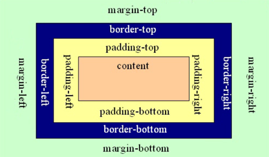
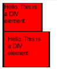
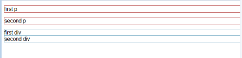
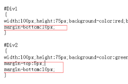
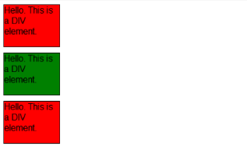
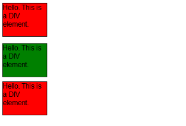
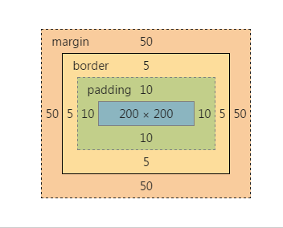
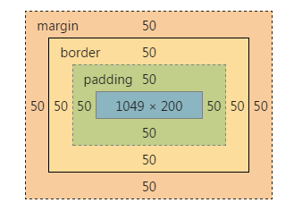
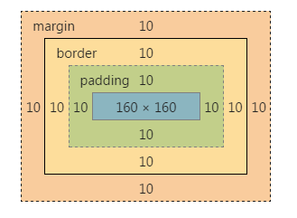

什么是盒子？
具备内容、填充、边框、边界这些属性，能包含其他元素的容器都是盒子
盒子的分类
- 标准盒子模型
- 怪异盒子模型（IE盒子模型）
注意：根据盒子的尺寸计算方式分类，盒子的基本属性相同
盒子的基本要素
content-内容
padding-内边距(填充）
border-边框
margin-外边距
理解盒模型属性
1.边框(border):可以设置边框的宽窄、样式和颜色。
2.内边距(padding):可以设置盒子内容区与边框的间距，想像一下内边距是从边框向内推元素的内容。
3.外边距(margin):可以设置盒子与相邻元素的间距，想像一下外边距是边框向外推其他元素。
盒子边框
边框有3个相关的属性:宽度(border-width)、样式(border-style)、颜色(border-color)
盒子内边距
在显式设定了width的前提下，padding值的设定会加大盒子的占位宽度。
盒子外边距
如图4所示，默认情况下，元素之间也会有外边距
样式表的第一条规则:* {margion:0 ;padding=0;}，所有元素默认的外边距和内边距都设定为零。
垂直叠加外边距
 如果把Div2的margin-top设定为15
标准盒子模型宽度计算方式
- 设置固定宽度
- 充满父容器
- 包裹内容
1.设置固定宽度
width:200px;height: 200px;padding: 10px;
margin: 50px;border: 5px ；

这种情况下，设置的200px为content的宽度;整个盒子的宽度是：（内容宽度 + border宽度 + padding宽度 + margin宽度）之和
2.充满父级容器
height: 200px;

这里可以看到不规定盒子宽度的话，盒子会自动充满一整行，这是块级元素的特性。
height: 200px;border: 50px solid red;background-color: black;padding: 50px;margin: 50px;
这种情况下，增加盒子的margin;border;padding;都会压缩内部contant的宽度
3.包裹内容的情况下
这种情况比较简单，内容的宽度按照内容计算，盒子的宽度将在内容宽度的基础上再增加（padding宽度 + border宽度 + margin宽度）之和。
怪异盒子模型（IE盒子模型）
当为盒子设置box-sizing:border-box时，就是怪异盒子模型
box-sizing:border-box;height: 200px;width:200px;border: 10px solid red;padding: 10px;margin: 10px;
这个时候你会发现，盒子200px的宽度是内容 + border + 边框的宽度（不包括margin）
盒子有多大
1.块级元素
2.行内元素
1.块级元素(block element)
1.没有显式地设置元素的width属性,默认值是auto. 元素始终会扩展到填满其父元素的宽度为止
2.为设定了宽度的盒子添加边框、内边距和外边距，会导致盒子扩展得更宽。扩展量等于水平边框和内边距之和
1.行内元素(block element)
1.inline元素会扩展到足以包裹其内容的宽度，添加内边距和水平边框会导致liline元素变宽，添加量等于水平边框和内边距的和。
行内元素+display：block=块状元素
css3 box-sizing属性
可取三个值之一：content-box（default），border-box，padding-box
1.content-box，border和padding不计算入width之内
2.padding-box，padding计算入width内
3.border-box，border和padding计算入width之内，其实就是师兄说的怪异模式了~